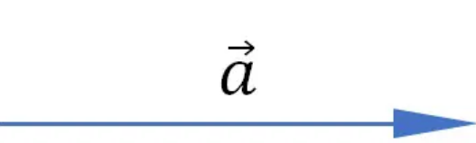
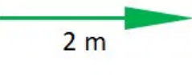
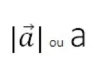
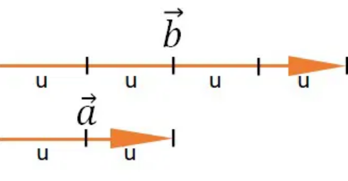
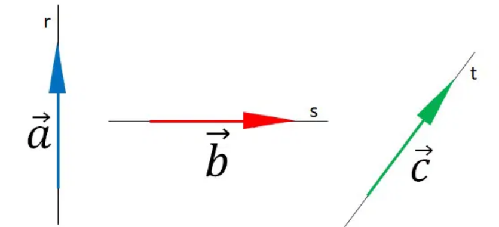
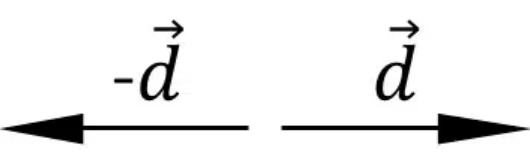

Vetor é a representação que determina o módulo, a direção e o sentido de uma grandeza vetorial. Os vetores são segmentos de reta orientados por uma seta em uma extremidade. Nomeamos os vetores com uma letra e uma pequena seta.
Os vetores caracterizam as grandezas vetoriais, que são as grandezas que precisam de orientação, ou seja, direção e sentido. Alguns exemplos são: força, velocidade, aceleração e deslocamento. Não basta o valor numérico, é preciso descrever para onde atuam estas grandezas.
O módulo do vetor, ou intensidade, é seu valor numérico, seguido da unidade de medida da grandeza que ele representa, por exemplo:
Indicamos o módulo entre barras mantendo a seta ou, apenas a letra, sem barras e sem seta.
O comprimento do vetor é proporcional ao módulo. Um vetor maior representa um módulo maior.
O módulo do vetor b é de 4 unidades, enquanto do vetor a é de 2 unidades.
A direção do vetor é a inclinação da reta suporte em que ele está determinado. Só existe uma direção para cada vetor.
O sentido do vetor é mostrado pela seta. Uma mesma direção pode conter dois sentidos, como para cima ou para baixo e, para a direita ou esquerda.
Adotando um sentido como positivo, o sentido oposto, o negativo, é representado com um sinal de subtração antes do símbolo do vetor.